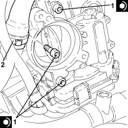
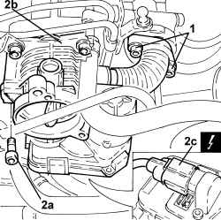

1060G50 THROTTLE BODY - R.R
- Path
- Procedures > 10 ENGINE > 1060 DIESEL INJECTION SYSTEM > 1060G DIESEL INJECTION PRESSURE PUMP ELECTRONIC CONTROL > 1060G50 THROTTLE BODY - R.R
- Kind
- repair procedure (removal / refitting; the operation number is the code)
- Applies to
- engines: 1.9 JTD 8V, 1.9 JTD 16V, 2.4 JTD 20V; all production periods
- Interactive page
- https://sloeber94.github.io/elrnDB/alfa/159/en/#/939010571
Applies to: engines: 1.9 JTD 16V, 2.4 JTD 20V; all production periods
 Removing
Removing
 Refitting
Refitting- Make sure that the ignition key is in the OFF position, then disconnect the battery terminal (-).
Description | Connector | |
|---|---|---|
- | Battery |
Op. 1048B22 AIR SUPPLY HOSE FROM HEAT EXCHANGER TO INTAKE MANIFOLD - R + R
1. Loosen the band and disconnect the oil vapour recovery pipe from the engine oil filler.
2. Undo the bolts securing the throttle body.

Applies to: engines: 1.9 JTD 16V, 2.4 JTD 20V; all production periods
1. Move the throttle body (1a) from its housing as necessary to disconnect the electrical connection (1b), then remove it.
Description | Connector | |
|---|---|---|
1b | Integrated throttle casing actuator |
- Remove the gasket.

Applies to: engines: 1.9 JTD 16V, 2.4 JTD 20V; all production periods
Refitting
Removing- Place the gasket back in its housing.
- Connect the electrical connection to the throttle body, then place it back in position.
1. Tighten the bolts securing the throttle body to the recommended torque.
Component | Fastening | dia | Value (daNm) | Validity |
|---|---|---|---|---|
Throttle body | Bolt | M8 | (chamber side) 2.5 | 1.9 JTD 16V 2.4 JTD 20V |
2. Connectt the oil vapour recovery pipe to the engine oil filler fitting and tighten the band.

Applies to: engines: 1.9 JTD 16V, 2.4 JTD 20V; all production periods
Op. 1048B22 AIR SUPPLY HOSE FROM HEAT EXCHANGER TO INTAKE MANIFOLD - R + R
- Connect the negative battery terminal.
Applies to: engines: 1.9 JTD 8V; all production periods
Removing
RefittingOp. 5530B52 BATTERY SUPPORT/DRIP TRAY - R.R
Op. 1048B22 AIR SUPPLY HOSE FROM HEAT EXCHANGER TO INTAKE MANIFOLD - R + R
1. Undo the bolts fixing the exhaust gas outlet hose from the E.G.R. solenoid valve, E.G.R. solenoid valve side.
2. Undo the bolts (2a) and remove the throttle casing (2b) after having disconnected the electrical connection (2c).
Description | Connector | |
|---|---|---|
2c | Integrated throttle casing actuator |
- Remove the gasket.

Applies to: engines: 1.9 JTD 8V; all production periods
- Working at the bench, undo the bolts and separate the throttle casing from the exhaust gas outlet hose from the E.G.R. solenoid valve.
Applies to: engines: 1.9 JTD 8V; all production periods
Refitting
Removing- Assemble the throttle casing and the exhaust gas outlet hose from the E.G.R. solenoid valve and secure them using the bolts.
- Place the gasket back in its housing.
- Connect the electrical connection to the throttle casing, then place it back in its housing and secure it tightening the bolts to the recommended torque.
Component | Fastening | dia | Value (daNm) | Validity |
|---|---|---|---|---|
Throttle body | Bolt | - | (intake manifold side) | 1.9 JTD 8v |
- Tighten the bolts fixing the exhaust gas outlet hose from the E.G.R. solenoid valve, E.G.R. solenoid valve side.
Op. 1048B22 AIR SUPPLY HOSE FROM HEAT EXCHANGER TO INTAKE MANIFOLD - R + R
Topics linked from this page (5)
- 1048B22 AIR SUPPLY HOSE FROM HEAT EXCHANGER TO INTAKE MANIFOLD - R + R
- 5530B10 BATTERY - R+R
- 5530B52 BATTERY SUPPORT/DRIP TRAY - R.R
- A001 BATTERY
- N075 THROTTLE BODY ACTUATOR
Topics that link to this page (16)
- 1060GL CHECK OPERATION OF MAIN ENGINE CONTROL UNIT RELAY
- 1060GO INTEGRATED THROTTLE BODY OPERATION CHECK
- 1060F10 FUEL INJECTORS - R.R.
- 1060F20 PIPE FROM PRESSURE PUMP TO FUEL MANIFOLD - R.R.
- 1060F30 SINGLE FUEL MANIFOLD PIPE - R.R.
- 1060F36 PIPES (ALL) FROM FUEL MANIFOLD TO INJECTOR - R.R.
- 1060F51 FUEL HOSE FROM SINGLE MANIFOLD INJECTOR TO RETURN MANIFOLD - R.R.
- 1060G31 FUEL PRESSURE REGULATOR ON SINGLE MANIFOLD TO INJECTORS - R R
- 1072B10 INLET MANIFOLD - R + R AND REPLACE SEAL
- 1080C24 E.G.R. SYSTEM SOLENOID - R + R
- E5050 DIESEL ENGINE ELECTRONIC MANAGEMENT WIRING DIAGRAM
- E5050 DIESEL ENGINE ELECTRONIC MANAGEMENT COMPONENT LOCATION
- E5050 DIESEL ENGINE ELECTRONIC MANAGEMENT WIRING DIAGRAM
- E5050 DIESEL ENGINE ELECTRONIC MANAGEMENT COMPONENT LOCATION
- E5050 DIESEL ENGINE ELECTRONIC MANAGEMENT WIRING DIAGRAM
- E5050 DIESEL ENGINE ELECTRONIC MANAGEMENT COMPONENT LOCATION